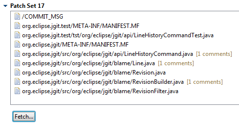
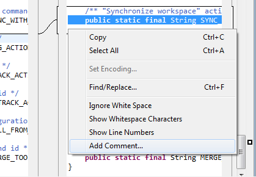

Gerrit Connector (Incubation): Fetch Patch Sets
Patch sets can be fetched into the local workspace directly from the review editor.

Gerrit Connector (Incubation): Add Comments
Comments can be added to a review through the context menu of the compare editor.

Gerrit Connector (Incubation)
The review editor shows the reviewers and their votes. The requirements section lists outstanding requirements.
If sections are collapsed a summary is displayed next to the section header. Dependencies are navigable through hyperlinks.

Patch sets can now be abandoned, restored, published and submitted.

On publish a dialog is displayed for voting and entering a comment.

A first preview version of the Gerrit code review connector is now available on the weekly update site.

Gerrit repositories are configured in the same manner as task repositories.

Task List Integration
Reviews are added to the Task List through queries.

Reviews are tasks like any other: Reviews can be scheduled, activated and update notifications are managed in the Task List.

Review Editor
Review tasks open in a rich editor.

Review comments and the most recent patch set are displayed in the editor (required online access).

Review files open in the compare editor. Comments are indicated in a ruler and displayed when hovering over the marker.